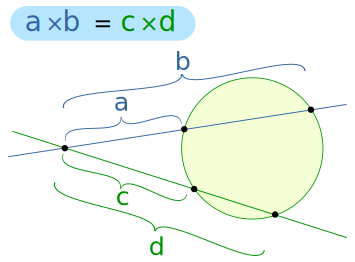
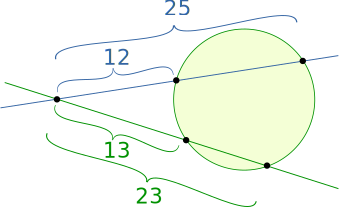
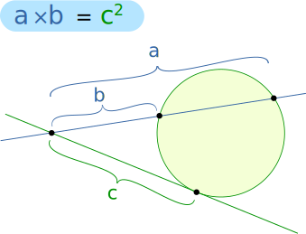
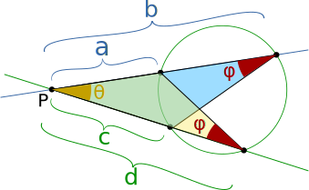

Intersecting Secants Theorem
This is the idea (a,b,c and d are lengths):

And here it is with some actual values (measured only to whole numbers):

And we get
- 12 × 25 = 300
- 13 × 23 = 299
Very close! If we measured perfectly the results would be equal.
Why not try drawing one yourself, measure the lengths and see what you get?
The lines are called secants (a line that cuts a circle at two points).
This also works if one or both are tangents (a line that just touches a circle at one point), but since two lengths are identical we don't write c×d or c×c we just write c2:

(Question: What happens when both are tangents?)
Why is this true?
Because there are similar triangles! Looking below:
- They both share the angle θ
- They both have the same angle φ (see inscribed angles)

The triangles may not be the same size, but they have the same angles ... so all lengths will be in proportion!
Looking at the lengths coming from point "P", one triangle has the ratio a/d, and the other has the matching ratio c/b:
a/d = c/b
a × b = c × d